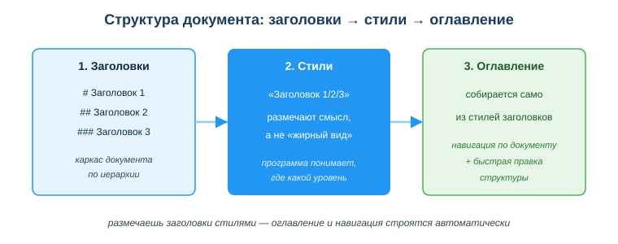
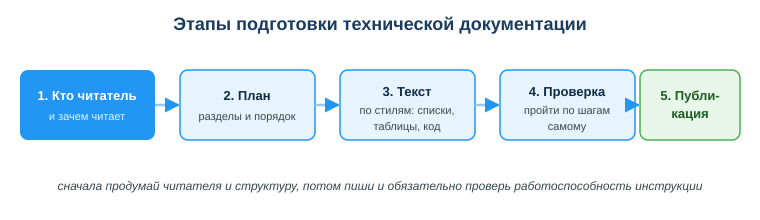

Дисциплина: Применение информационно-коммуникационных и цифровых технологий
Результат обучения: РО 2.1 — владение основами ИКТ · Объём темы: 2 часа
Квалификация: 4S06130103 «Разработчик программного обеспечения»
Расскажу, как это выглядит на самом деле — не в теории, а на защите проекта. Ты неделю писал код, у тебя дома всё запускается, ты сдаёшь работу и прикладываешь README из одной строки: «Запускается через main». Преподаватель (или будущий тимлид) открывает репозиторий, пробует запустить — и не может. Нет версии языка, нет шагов установки, не указаны зависимости, нет самой команды запуска. Код рабочий, но воспользоваться им нельзя. И вот что важно понять: с точки зрения того, кто принимает работу, её как будто и нет. То, что нельзя запустить и понять без тебя, не считается готовым результатом — точка.
Теперь другая сторона той же медали, и я видел её десятки раз. Ты приходишь на стажировку, тебе говорят: «вот наш сервис, разберись и почини баг». Открываешь репозиторий — а там нормальный README: что это за проект, как поднять окружение по шагам, как запустить, где лежит конфиг, что делать при типичных ошибках. Через двадцать минут ты уже внутри задачи, а не сидишь и не ждёшь, пока кто-то освободится и на пальцах покажет, «куда тут вообще смотреть». В первом случае документации нет — и теряются часы чужого времени. Во втором она есть и сделана по-человечески — и ты экономишь целый день.
Эта тема — про навык, который на первый взгляд «не про программирование», а на деле сопровождает разработчика каждый день. README, инструкция по развёртыванию, описание API, техническое задание, комментарий к задаче в трекере — всё это пишет именно разработчик, а не «отдельный человек по документам». И пишет не «красиво», а структурно: так, чтобы другой человек — или ты сам через полгода, когда забудешь детали, — понял суть за минуту, а не разбирался с нуля. Умение быстро собрать понятный технический документ напрямую влияет на то, примут ли твою работу в команде и сможет ли ею воспользоваться кто-то кроме тебя [1; 5].
И сразу убери одно вредное заблуждение, с которым приходит почти каждый. Документация — это не формальность «для галочки», не текст, который пишут «потому что так положено». Это рабочий инструмент: им пользуются, по нему действуют, и если он не помогает действовать — он бесполезен, сколько бы страниц в нём ни было. Поэтому цель темы не «научиться писать много». Цель — научиться давать читателю ответ быстро и точно. Хороший технический текст почти всегда короче плохого, и дальше я покажу, почему.
После изучения темы ты сможешь:
#/##/### в Markdown), которое размечает смысл и уровень фрагмента, а не просто его внешний вид [7].#, -, `), на котором по умолчанию пишут README на GitHub и в редакторах кода [7].Начнём с определения, к которому будем возвращаться весь раздел:
В этом определении всё держится на одном слове — действовать. Обычный текст (рассказ, эссе, рассуждение) читают ради содержания: важно, что сказано. Технический документ читают ради результата: важно, что читатель сможет сделать после прочтения. Отсюда единственный честный критерий качества: если документ не помогает действовать — он плохой, сколько бы в нём ни было слов. Держи этот вопрос в голове всё занятие: «помогает ли этот текст читателю сделать шаг?»
Давай не на словах, а на живом сравнении. Возьмём один и тот же проект и два README к нему.
Вот как выглядит «текст ради текста» — я такие вижу постоянно:
# Мой проект
Это очень полезный и современный проект, в который вложено много труда.
Он использует передовые технологии, хорошо протестирован и удобен.
Запускается через main.Прочитай глазами читателя, который хочет запустить. Он не узнал ничего: ни на каком языке проект, ни что поставить, ни какой командой стартовать. «Полезный», «современный», «удобный» — это оценки автора, а не инструкция. По такому README проект воспроизвести нельзя.
А вот тот же проект, но README собран под действие:
# Напоминалка — телеграм-бот
Бот присылает напоминания о задачах в заданное время.
## Установка
1. Склонируй репозиторий:
`git clone https://github.com/company/reminder-bot.git`
2. Установи зависимости:
`pip install -r requirements.txt`
3. Создай файл `.env` и положи в него токен бота:
`BOT_TOKEN=твой_токен`
4. Запусти бота:
`python main.py`Слов меньше, а пользы несоизмеримо больше: по этому README проект реально разворачивается. Сравни два варианта честно — во втором нет ни одного «красивого» слова, зато есть четыре шага, которые можно выполнить пальцами.
Отсюда первое практическое правило темы: убирай «воду» (оценки «полезный», «современный», «удобный», «мощный») и оставляй то, по чему можно действовать — что это, как поставить, как запустить, что делать при ошибке. Когда сомневаешься, оставлять фразу или нет, задай ей вопрос: «а по этой фразе читатель что-то сделает?» Нет — вычёркивай.
Где разработчик встречает документацию на практике — чтобы ты видел, что навык не «учебный»:
Всё это объединяет одно: пишет разработчик, и пишет структурно. «Структурно» — это не про длину, а про то, что каждый кусок содержания лежит в правильном виде: шаги — списком, сравнение — таблицей, команда — кодом. Об этом весь следующий раздел.
Главная мысль всей темы, запиши её крупно: в документе важнее не оформление (цвет, шрифт, размер), а структура (иерархия частей). Цвет заголовка меняется за секунду и ни на что не влияет; структуру переделать тяжело, и именно она определяет, найдёт ли читатель нужное. Новичок первым делом лезет в шрифты и цвета — а профи сначала строит каркас.
Хорошая новость: любой инструмент — MS Word, Google Документы или Markdown в редакторе кода — даёт один и тот же базовый набор средств. Меняется внешний вид кнопок, но идея везде одна:
| Средство | Для чего оно | Простой ориентир «когда использовать» |
|---|---|---|
| Заголовки (1 / 2 / 3) | каркас документа, из них строится оглавление | начинается новый раздел или подраздел |
| Списки | перечни и шаги | есть несколько однотипных пунктов |
| Таблицы | сравнение и пары «параметр → значение» | надо сопоставить два-три объекта по признакам |
| Выделение (жирный/курсив) | акцент внутри предложения | нужно подчеркнуть одно слово или термин |
| Моноширинный / код-блок | команды, имена файлов, код | технический текст, который нельзя путать с обычным |
Разберём каждый «кирпич» подробнее — из них ты собираешь любой документ.
Заголовки — это не «крупный жирный текст», а обозначение начала смыслового раздела. У заголовков есть уровни: уровень 1 — название всего документа, уровень 2 — крупные разделы, уровень 3 — подразделы внутри них. Именно уровни создают иерархию, по которой строится оглавление (подробно — в 4.3 и 4.4). Запомни различие сразу: заголовок несёт смысл, а не только вид.
Списки бывают двух видов, и выбор между ними — не вкусовщина, а смысл:
Простой тест на каждый день: спроси себя «важен ли порядок пунктов?». Да — нумерованный, нет — маркированный. Классическая ошибка новичка — расписать шаги установки маркерами: читатель не понимает, в каком порядке их делать.
Таблицы нужны там, где ты что-то сравниваешь или задаёшь пары «параметр → значение». Сигнал, что просится таблица, — когда в тексте появляются фразы вида «а у первого варианта так, а у второго иначе». Например, сравнение двух баз данных по скорости, цене и сложности; или таблица параметров конфигурации: имя параметра → значение → описание. И сразу ловушка: не превращай в таблицу обычный список. Таблица оправдана только при сравнении по нескольким признакам; для простого перечня она лишняя и мешает.
Выделение (жирный, курсив) — для акцента внутри предложения: выделить термин при первом появлении, подчеркнуть важное слово. Главная беда — путать выделение с заголовком (об этом отдельно в 4.5): жирная строка похожа на заголовок, но заголовком не является. Для человека одинаково, для программы — небо и земля.
Моноширинный шрифт и код-блоки — обязательный инструмент технического документа. Команды, имена файлов, фрагменты кода оформляются моноширинным шрифтом (в Markdown — в обратных кавычках ` для одной строки или тройных ``` для блока). Зачем это нужно, три причины по делу:
Покажу разницу вживую — вот команда, утонувшая в тексте, и она же в коде:
Плохо: запустите pip install -r requirements.txt и подождите
Хорошо: запустите `pip install -r requirements.txt` и подождитеВо второй строке видно, где команда начинается и где кончается; в первой — попробуй угадай, входит ли «и подождите» в команду. И это не косметика: если автотекстовый редактор превратит обычные - в длинное тире — или прямые кавычки в «ёлочки», команда из обычного текста просто не запустится. Код-блок это блокирует — там символы остаются ровно такими, как ты набрал.
Заголовки — это скелет документа, и у скелета есть правила. Посмотри на схему «Структура документа: заголовки → стили → оглавление» (приложение А): первый блок на ней — именно заголовки, «каркас по иерархии». Разберём, как этот каркас строится правильно.

Три уровня и их роли. В техническом документе обычно хватает трёх уровней:
Правило непрерывности уровней. Уровни нельзя «перепрыгивать»: после заголовка уровня 1 не должен сразу идти уровень 3, минуя уровень 2. Это как в книге сразу после названия открыть параграф 1.1, пропустив главу 1. Программа, собирающая оглавление, по «дыре» в уровнях не понимает, как связать разделы, и навигация ломается. Правильная иерархия выглядит как аккуратная лесенка: 1 → 2 → 3 → снова 2 → снова 3.
Вот как правильная иерархия README выглядит в Markdown (где # — уровень 1, ## — 2, ### — 3):
# README проекта «Напоминалка»
## Описание
## Установка
### Установка на Windows
### Установка на Linux
## Использование
## Возможные ошибкиПрочитай только эти строки, не заглядывая в текст между ними, — и тебе уже понятно, из чего состоит документ и в каком порядке. Это и есть признак здоровой структуры.
А вот неправильная — с «прыжком» через уровень и перепутанным порядком:
# README проекта «Напоминалка»
### Установка на Windows ← прыжок с 1 сразу на 3, уровень 2 пропущен
## Описание ← «Описание» после установки — порядок сломанЗдесь уже по заголовкам видно, что документ кривой: подраздел «Установка на Windows» висит без родительского раздела «Установка», а описание, которое читают первым, оказалось после установки.
Как проверить иерархию самому — приём «чтение по заголовкам». Прочитай только заголовки, не читая текст между ними. Если по одним заголовкам понятна логика документа и порядок разделов осмыслен — иерархия в порядке. Если заголовки выглядят как случайный набор — структуру надо переделать. Это ровно то, что делает программа, собирая оглавление: она смотрит только на заголовки.
Здесь — самый важный технический приём занятия. Посмотри на схему приложения А ещё раз: три блока соединены стрелками — заголовки → стили → оглавление. Это цепочка, которую ты должен понять до конца, потому что на ней держится половина всех практических ошибок.
Что такое стиль и почему он не равен «жирному виду». Когда ты делаешь строку заголовком через стиль («Заголовок 1» в Word, # в Markdown), ты сообщаешь программе смысл: «это заголовок такого-то уровня». Программа запоминает не только внешний вид, но и то, чем эта строка является. Когда же ты просто делаешь строку жирной и крупной вручную, ты меняешь только внешний вид — для программы это остаётся обычным абзацем, который случайно выглядит крупно. Снаружи строки могут смотреться одинаково, но по сути это два совершенно разных объекта: один — размеченный заголовок, второй — просто жирный текст.
Покажу на Markdown, где разница видна голым глазом. Вот две строки:
# Установка ← это заголовок уровня 1: решётка + пробел + текст
**Установка** ← это просто жирный текст (звёздочки = выделение)Первую строку GitHub покажет крупным заголовком, добавит ей якорь и включит в оглавление. Вторую покажет жирной внутри абзаца — и в оглавление она не попадёт никогда, потому что для системы это не заголовок, а выделенное слово. Обрати внимание на мелочь, на которой спотыкаются: после # обязателен пробел. Если написать #Установка без пробела, многие обработчики Markdown не считают это заголовком и покажут строку как обычный текст с решёткой. Пробел после решётки — не украшение, а часть синтаксиса.
Откуда берётся оглавление. Оглавление (содержание) программа собирает автоматически — из заголовков, размеченных стилями. Она проходит по документу, находит все строки со стилем «Заголовок», выстраивает их по уровням и составляет список с переходами. Ключевой момент: она находит только строки со стилем заголовка. Жирный текст, сделанный вручную, в оглавление не попадёт никогда. Поэтому и строится та самая цепочка со схемы: размечаешь стилями → программа понимает уровни → оглавление и навигация собираются сами.
Что даёт автоматическое оглавление, кроме самого списка:
Как это делается на практике — пошагово.
В MS Word / Google Документах:
В Markdown (редактор кода, GitHub) всё ещё проще: уровень задаётся числом решёток # в начале строки — # это уровень 1, ## — 2, ### — 3. На GitHub у каждого заголовка автоматически появляется якорь, и оглавление можно собрать ссылками на эти якоря. Вот как выглядит ручное оглавление ссылками (многие редакторы вставляют такое одной командой):
## Содержание
- [Описание](#описание)
- [Установка](#установка)
- [Использование](#использование)
- [Возможные ошибки](#возможные-ошибки)Разберём одну строку, чтобы не было магии: [Установка](#установка) — в квадратных скобках текст ссылки, который увидит читатель, а в круглых после решётки — якорь заголовка. GitHub делает якорь из текста заголовка сам: приводит к нижнему регистру и заменяет пробелы на дефисы. Поэтому «Возможные ошибки» превращается в якорь #возможные-ошибки — с дефисом вместо пробела. Если ошибёшься в якоре (например, забудешь дефис), ссылка просто не сработает — переход никуда не приведёт.
Это самая частая ошибка новичков, поэтому разберём её отдельно и до конца — с ней ты будешь сталкиваться в чужих документах постоянно.
В чём ошибка. Студент хочет сделать заголовок раздела. Вместо того чтобы применить стиль «Заголовок», он выделяет строку, ставит размер 16pt и нажимает «жирный». Визуально строка стала похожа на заголовок — и студент считает задачу выполненной. В Markdown та же ошибка выглядит так:
Ошибка: **Установка** (жирный текст вместо заголовка)
Правильно: ## Установка (заголовок уровня 2 стилем)Почему это ошибка, а не «другой способ». Для человека строка выглядит как заголовок, но для программы это по-прежнему обычный абзац, у которого случайно крупный жирный шрифт. Из-за этого:
Как правильно. Использовать стили заголовков: в Word — «Заголовок 1/2/3», в Markdown — #, ##, ###. Тогда оглавление и навигация работают сами, а структура остаётся «живой» — её видит и человек, и программа.
Простой способ запомнить разницу раз и навсегда: жирный — это про то, как строка выглядит; стиль заголовка — про то, чем строка является. Документу нужно второе. Внешний вид можно донастроить потом, а вот смысл строки задаётся сразу и один раз.
README — главный документ проекта и центральная практика темы. Его удобно строить по проверенной схеме из четырёх-пяти разделов. Сначала каркас (только заголовки):
# Название проекта
Краткое описание (1–2 предложения: что это и зачем)
## Установка
шаги по пунктам (нумерованный список, команды в код-блоках)
## Использование
пример запуска
## Возможные ошибки
проблема → решениеА теперь тот же каркас, наполненный до конца — вот как выглядит README, который реально работает. Разбери его сверху вниз, обращая внимание на то, каким средством оформлен каждый кусок:
# Напоминалка — телеграм-бот
Бот присылает напоминания о задачах в заданное время. Написан на Python 3.10+.
## Установка
1. Склонируй репозиторий:
`git clone https://github.com/company/reminder-bot.git`
2. Перейди в папку проекта:
`cd reminder-bot`
3. Установи зависимости:
`pip install -r requirements.txt`
4. Создай файл `.env` в корне проекта и укажи токен бота:
`BOT_TOKEN=твой_токен_от_BotFather`
## Использование
Запусти бота командой:
`python main.py`
После запуска напиши боту в Telegram команду `/start` — он ответит приветствием.
Чтобы поставить напоминание: `/add 18:00 позвонить маме`.
## Настройки
| Параметр | Значение по умолчанию | Описание |
|---------------|-----------------------|--------------------------------------|
| BOT_TOKEN | — | токен бота от BotFather (обязателен) |
| CHECK_EVERY | 60 | как часто проверять напоминания, сек |
| TIMEZONE | Asia/Almaty | часовой пояс для времени напоминаний |
## Возможные ошибки
- `ModuleNotFoundError: No module named 'telebot'` — не установлены зависимости,
выполни шаг 3 установки.
- `Unauthorized` при запуске — неверный или пустой `BOT_TOKEN` в файле `.env`.Разберём, что писать в каждом разделе и почему именно так — на этом самом примере.
Название и краткое описание. Одна-две фразы: что это за проект и какую задачу решает. Без рекламы («лучший», «удобный») — только суть. Читатель за пять секунд должен понять, туда ли он попал. В примере это «Бот присылает напоминания о задачах… Написан на Python 3.10+» — сразу ясно и что делает, и на чём написан.
Установка. Самый важный раздел — по нему проект разворачивают. Здесь обязателен нумерованный список (порядок шагов критичен), а все команды — в код-блоках. Хороший раздел «Установка» отвечает: что нужно иметь заранее (версия языка, инструменты), как получить код, как поставить зависимости, как настроить конфигурацию. Обрати внимание на шаг 4 в примере: мало сказать «создай .env» — показано, что именно туда положить. Пропущенная деталь конфигурации — самая частая причина, по которой «у меня не заводится».
Использование. Как запустить и как пользоваться: команда запуска и короткий пример реального сценария. В примере это не только python main.py, но и что делать дальше — команды /start и /add. Читатель должен увидеть не только «как включить», но и «как этим пользоваться».
Настройки (таблица). Если у проекта есть параметры, уместна таблица «имя → значение по умолчанию → описание». Посмотри, насколько она нагляднее абзаца: три столбца, глаз мгновенно находит нужный параметр и его смысл. Это как раз тот случай из 4.2, когда содержание — сравнение по признакам, и просится таблица, а не список.
Возможные ошибки. Раздел, который отличает зрелый README от формального. Здесь по принципу «проблема → решение» перечисляют типичные сбои: показываешь текст ошибки, каким его увидит читатель, и рядом — что делать. В примере видно оба типичных сбоя — забытые зависимости и пустой токен. Этот раздел экономит и читателю, и тебе массу времени на поддержку: вместо десяти одинаковых вопросов «а почему не работает» человек находит ответ сам.
Эта схема — не догма, а надёжная отправная точка: под конкретный проект разделы можно добавлять («Лицензия», «Авторы», «Требования»), но Описание → Установка → Использование → Возможные ошибки нужны почти всегда.
Хороший документ рождается не так, что человек сел и сразу застрочил текст подряд. Сначала думаешь о читателе и структуре, потом наполняешь, и обязательно проверяешь. Посмотри на схему «Этапы подготовки технической документации» (приложение Б) — пять шагов слева направо. Разберём каждый.

Суть всех пяти шагов в одной фразе: сначала продумай читателя и структуру, потом пиши и обязательно проверь работоспособность инструкции.
Кроме структуры, у технического документа есть требования к оформлению — они делают его профессиональным и удобным. Это не «украшательство», а правила, которые помогают читателю.
Эти требования удобно держать как чек-лист и пробегать по нему перед сдачей (см. раздел 7).
Может показаться, что Word, Google Документы и Markdown — три разных мира. На самом деле идея у них одна, различается только «упаковка». Везде есть заголовки со стилями, списки, таблицы, выделение и моноширинный текст; везде оглавление собирается из размеченных заголовков. Понял принцип на одном инструменте — на другой перейдёшь за десять минут.
| Что нужно | MS Word / Google Документы | Markdown |
|---|---|---|
| Заголовок уровня 1/2/3 | стиль «Заголовок 1/2/3» | # / ## / ### |
| Нумерованный список | кнопка нумерации | 1. 2. 3. |
| Маркированный список | кнопка маркеров | - в начале строки |
| Код / команда | моноширинный шрифт | `код` или блок ``` |
| Оглавление | вставка оглавления из заголовков | по якорям заголовков (часто автоматически) |
Почему README обычно пишут в Markdown. Markdown — это простой текст с символами разметки, который читается даже без обработки и одинаково открывается везде. Посмотри на любой из блоков выше: даже «сырой» Markdown понятен глазом — # явно заголовок, - явно пункт, обратные кавычки явно команда. GitHub и редакторы кода показывают .md-файлы уже оформленными, с автоматическими якорями у заголовков. Поэтому именно Markdown стал стандартом для README и документации в репозиториях [7]. Word и Google Документы удобнее для документов, которые читают «как документ» — ТЗ, отчёт, инструкция для не-технического человека.
Запомни вывод раздела: инструмент — дело привычки, принцип везде один — структура через заголовки-стили, правильные средства под каждый фрагмент, проверка по шагам.
Пример 1 — README из одной строки. Студент сдал проект с README «Запускается через main». Преподаватель не смог запустить.
Разбор: документ не помогает действовать — значит, по критерию из 4.1 он плохой, хотя сам код рабочий. Не хватает разделов «Установка» (шаги и зависимости) и «Использование» (команда запуска). Исправление по схеме 4.6: добавить нумерованный список установки с командами в код-блоках и пример запуска — ровно как в развёрнутом README из 4.6. После этого проект воспроизводится с первого раза.
Пример 2 — «простыня» вместо инструкции. Дан текст: «Скачайте архив распакуйте установите зависимости командой и запустите main потом откройте браузер». Всё слитно, команды не выделены, порядок теряется.
Разбор: здесь важен порядок действий — значит, нужен нумерованный список, а команды надо вынести в код-блоки. Правильно так:
1. Скачай архив и распакуй.
2. Установи зависимости: `pip install -r requirements.txt`
3. Запусти: `python main.py`
4. Открой в браузере `http://localhost:8000`Тот же смысл, но теперь по нему можно действовать, не спотыкаясь: видно и порядок, и где кончается команда.
Пример 3 — заголовки «жирным вручную». Студент оформил все заголовки размером 16pt и жирным (**Заголовок** в Markdown), без стилей. На вид — нормальный документ, но оглавление пустое.
Разбор: это ошибка из 4.5. Для программы это обычные абзацы, поэтому содержание не собирается и навигация не работает. Исправление: заменить ручное форматирование на стили «Заголовок 1/2/3» (или #/##/### в Markdown) — и оглавление соберётся само.
Пример 4 — где таблица, а где список. Студенту нужно показать в README сравнение двух баз данных по скорости, цене и сложности, а рядом — перечень шагов установки. Он всё оформил маркированными списками.
Разбор: сравнение по нескольким признакам — это случай для таблицы (строки — базы, столбцы — признаки), её легко читать глазами (как таблица настроек в 4.6). А шаги установки — это нумерованный список: важен порядок. Выбор средства определяется содержанием: сравнение → таблица, последовательность → нумерованный список.
#/##/###).#, -, `), стандарт для README в репозиториях.Основная литература:
Дополнительно:
Нормативные источники РК:
Электронные ресурсы и официальная документация:
assets/05_shema-struktura-dokumenta.svg. Читается слева направо: размечаешь заголовки стилями (а не «жирным видом») → программа понимает уровни → оглавление и навигация собираются автоматически. Это центральная цепочка темы.assets/05_shema-etapy-podgotovki.svg. Пять шагов по порядку: 1) кто читатель и зачем; 2) план разделов; 3) текст по стилям (списки, таблицы, код); 4) проверка прохождением по шагам; 5) публикация. Суть: сначала продумай читателя и структуру, потом пиши и обязательно проверь работоспособность инструкции.Материал подготовлен на основе урока темы (urok.md) и приведённых в конце источников; он расширяет и углубляет содержание урока для самостоятельного изучения. Источники приведены главами и ссылками (без номеров страниц); нормативные акты — с реквизитами.
Разработал: преподаватель ИКТ, магистр управления и информационной безопасности Калиаскаров Д.А.
Материал одобрен к использованию в обучении решением Педагогического совета ТОО «Колледж Хекслет Казахстан».